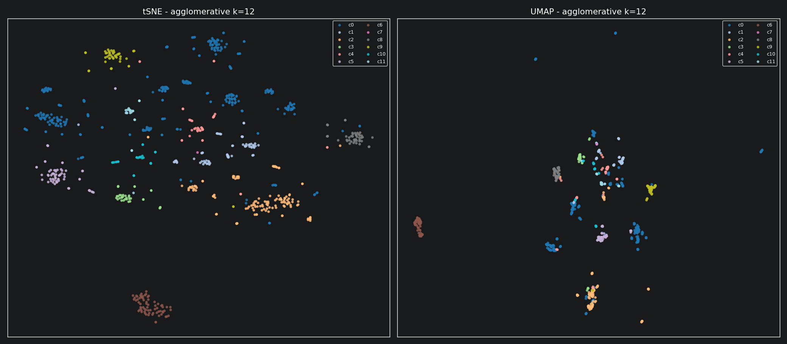
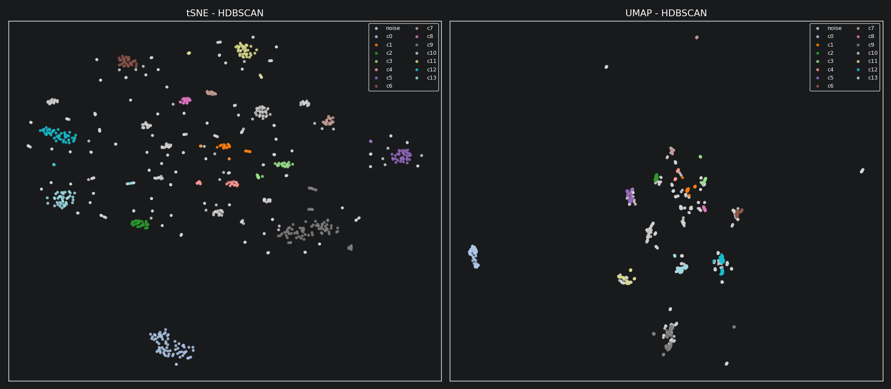
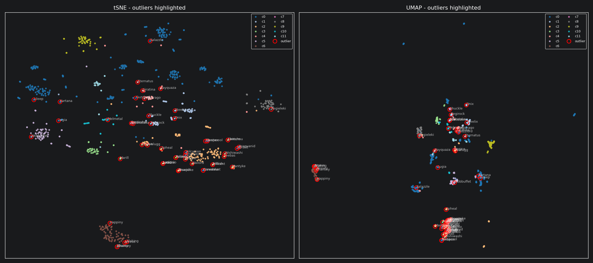

Lehrveranstaltung: IEM.DAM2, SS 2026
Autor: Eric Buchinger
Datensatz: pokedex.csv (898 Pokemon, 6 Basis-Stats, Größe/Gewicht, 17 One-Hot Type-Spalten, Thumbnails)
Dieses Dokument fasst die Lösung zur Übung 4 zusammen. Die vollständige Implementierung findet sich in main.py (Skript) und ue04_solution.ipynb (kommentiertes Notebook). Die Abhängigkeiten werden mit uv verwaltet (pyproject.toml, uv.lock); reproduzierbar via uv sync.
Die fünf Teilaufgaben waren:
Ein Pokemon wird durch drei sehr unterschiedliche Arten von Attributen beschrieben, weshalb eine einzelne Metrik auf dem rohen Feature-Vektor wenig sinnvoll ist. Stattdessen wurden drei normalisierte Distanzblöcke gebaut und mit Gewichten kombiniert.
| Block | Features | Metrik | Begründung |
|---|---|---|---|
| Stats | HP, Attack, Defense, Sp. Atk, Sp. Def, Speed | standardisierte Euklidische | kontinuierliche Werte; Z-Standardisierung macht Größenordnungen vergleichbar |
| Types | 17 One-Hot Type-Spalten | Jaccard | Mengenähnlichkeit; "Water+Ice" bleibt nahe an "Water+Flying", aber weit entfernt von "Fire+Rock" |
| Size | Größe, Gewicht | standardisierte Euklidische auf log1p |
starkes Tail-Verhalten; log1p verhindert, dass Pokemon wie Wailord die Metrik dominieren |
Jeder Block wird auf etwa [0, 1] skaliert und anschließend wie folgt kombiniert:
$$D = w_{\text{stats}}\, D_{\text{stats}} + w_{\text{types}}\, D_{\text{types}} + w_{\text{size}}\, D_{\text{size}}$$
Standardgewichte (0.5, 0.4, 0.1) - die Stats liefern das informationsreichste Signal, Types ein starkes Sekundär-Votum, die Größe gibt einen kleinen Zusatz-Impuls.
Die nächsten Nachbarn einiger bekannter Pokemon entsprechen der Intuition:
Die resultierende Matrix hat die Form 898 x 898 mit min=0, mean≈0.52, max≈0.94.
Gewählter Algorithmus: Agglomeratives Clustering mit Average Linkage.
Die Entscheidung folgt direkt aus den Eigenschaften unserer Daten und einem systematischen Ausschluss der Alternativen:
Wir haben eine vorberechnete, nicht-euklidische Distanzmatrix. Unsere kombinierte Distanz aus standardisierter Euklidischer Distanz (Stats), Jaccard (Types) und log-skalierter Euklidischer Distanz (Size) erzeugt eine Metrik, die nicht in einen euklidischen Vektorraum eingebettet ist. Algorithmen, die intern Mittelwerte berechnen, sind damit nicht direkt anwendbar.
k-Means scheidet aus. k-Means setzt einen euklidischen Feature-Raum voraus, weil es Centroiden als arithmetische Mittel berechnet. Über einer Jaccard-Distanz ist der Centroid mathematisch nicht definiert. Eine erzwungene Anwendung würde die Type-Information verfälschen.
Ward-Linkage scheidet aus dem gleichen Grund aus.
Ward minimiert die Varianz innerhalb der Cluster und benötigt damit ebenfalls quadrierte euklidische Distanzen. sklearn lehnt metric="precomputed" mit Ward sogar explizit ab.
DBSCAN/HDBSCAN funktioniert, ist hier aber zu rigoros. HDBSCAN wurde als Vergleich mit gelaufen, labelt aber ~40 % der Punkte als Rauschen. Das ist für die Ausreißer-Aufgabe nützlich, aber als Hauptclustering ungeeignet - wir wollen eine vollständige Partition aller Pokemon, nicht nur der "dichten" Bereiche.
Spektrales Clustering wäre möglich, ist aber schwerer zu tunen. Spektrales Clustering benötigt eine Ähnlichkeitsmatrix (nicht Distanz), zusätzliche Kernel-Parameter und eine eigene Embedding-Dimension. Der Aufwand-Nutzen-Vergleich gegenüber agglomerativem Clustering rechtfertigt das hier nicht.
Average Linkage statt Single oder Complete. Single Linkage tendiert zu langen Ketten ("chaining effect") - ein einzelnes verbindendes Pokemon kann zwei sehr unterschiedliche Gruppen zusammenführen. Complete Linkage reagiert sehr empfindlich auf Ausreißer, weil die maximale Distanz zwischen zwei Cluster-Punkten den Merge steuert. Average Linkage ist der Kompromiss: robust gegenüber Ausreißern, neigt nicht zu Ketten und erzeugt kompakte, etwa gleich große Cluster. Genau das wollen wir bei einem heterogenen Datensatz wie diesem.
Praktischer Vorteil: direkter Konsum der Distanzmatrix.
Agglomeratives Clustering mit metric="precomputed" greift unsere Distanzmatrix unverändert auf. Damit bleibt die sorgfältig konstruierte Distanzfunktion aus Schritt 1 die alleinige Quelle der Wahrheit für die Clusterbildung - keine Feature-Re-Engineering, keine impliziten Annahmen.
Es wurde k von 3 bis 12 durchsucht und das k mit dem höchsten Silhouettenkoeffizienten (berechnet auf der vorberechneten Distanz) gewählt.
| k | 3 | 4 | 5 | 6 | 7 | 8 | 9 | 10 | 11 | 12 |
|---|---|---|---|---|---|---|---|---|---|---|
| sil | 0.0677 | 0.0682 | 0.0689 | 0.0935 | 0.1442 | 0.1576 | 0.1833 | 0.2065 | 0.2147 | 0.2551 |
Gewähltes k = 12 (Silhouette = 0.2551). Der monotone Anstieg der Scores ist ein Indiz dafür, dass der Datensatz eher ein Kontinuum als eine Menge gut getrennter Cluster bildet.
HDBSCAN (dichtebasiert, min_cluster_size=15, min_samples=5) fand 14 Cluster und markierte 367 Punkte als Rauschen (~40 %), was diese Beobachtung untermauert: viele Pokemon liegen in dünn besetzten Regionen der Metrik.
Beide Algorithmen akzeptieren die vorberechnete Distanz direkt.
perplexity=30, init="random" - ein sinnvoller Default für ~900 Punkte.n_neighbors=20, min_dist=0.1 - kompaktere, deutlicher abgesetzte Cluster als mit den Default-Werten.

Beide Embeddings zeigen dieselbe grobe Struktur: hochstatige Pokemon / Legendäre auf der einen Seite, kleine frühe Entwicklungsstufen auf der anderen, dazwischen typ-gefärbte Sub-Blobs (Wasser, Käfer, Gestein klar erkennbar). Die HDBSCAN-Rauschpunkte verteilen sich an den Cluster-Rändern - genau dort, wo Ausreißer zu erwarten sind.
Drei komplementäre Methoden, die im Konsens ausgewertet werden:
Mit contamination = 0.03 markierten LOF und Isolation Forest je 27 Pokemon; HDBSCAN markierte 367.
| Name | Stat-Summe | Types | Flags |
|---|---|---|---|
| Chansey | 450 | (keine / normal) | LOF + ISO |
| Heiteira | 540 | (keine / normal) | LOF + ISO |
| Pottrott | 505 | bug, rock | ISO + HDB |
| Stahlos | 510 | ground, steel | ISO + HDB |
| Lugia | 680 | psychic, flying | ISO + HDB |
| Woingenau | 405 | psychic | ISO |
| Quappo | 510 | water, fighting | LOF + HDB |
| Lanturn | 460 | water, electric | LOF + HDB |
| Marill | 250 | water, fairy | LOF + HDB |

Vier wiederkehrende Muster:
Alle vier sind exakt die Art von "anders", die eine Ausreißererkennung finden soll.
perplexity=30 und der vorberechneten Distanzmatrix entstand fast ohne Tuning ein Ergebnis, das die Stat-/Typ-Struktur klar abbildet - hochstatige Legendäre am Rand, frühe Entwicklungsstufen kompakt zusammen, Typ-Familien als sichtbare Sub-Blobs. Die Implementierung war ein Dreizeiler mit sklearn.manifold.TSNE, und der Output hat sofort Sinn ergeben. Das ist genau der Punkt, an dem man merkt, dass die vorgelagerte Distanzfunktion gut gewählt war: wenn die Projektion Struktur zeigt, hat die Metrik bereits die richtige getroffen.(0.5, 0.4, 0.1) ist plausibel, aber jede andere Aufteilung verändert die Cluster spürbar. Ohne ein objektives Optimierungsziel (z. B. Type-Reinheit) bleibt das eine begründete, aber nicht beweisbare Wahl.log1p hat Wailord allein die Größendistanz dominiert. Erst die Log-Skalierung hat das Problem entschärft - das musste durch ausprobieren herausgefunden werden.k - "bestes k" bedeutet hier nur "am wenigsten schlecht unter den getesteten Werten". Das deutet auf ein Kontinuum hin und ist eine grundsätzliche Limitation der Datenlage, nicht der Methode.uv sync # Abhängigkeiten installieren
uv run python main.py # Skript ausführen (erzeugt figures/ neu)
uv run jupyter lab ue04_solution.ipynb # interaktives Notebook
Dateien:
main.py - End-to-End-Skriptue04_solution.ipynb - kommentiertes Notebookpyproject.toml, uv.lock - Dependency-Pinningfigures/ - generierte PNGs